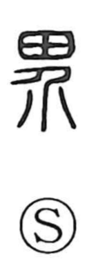

界

Uncategorized
Kun: sakai | On: kai
boundary ・ border ・ world
Explanation
This is a phono-semantic character. The element 介 (kai) supplies the on reading and depicts a person armored front and back, evoking protection and the act of keeping apart. Extending that notion of separation to fields and rice paddies yields the idea of lines that mark off and divide them. From such marked divisions arises the meaning of a boundary, and by extension the bounded sphere or world.